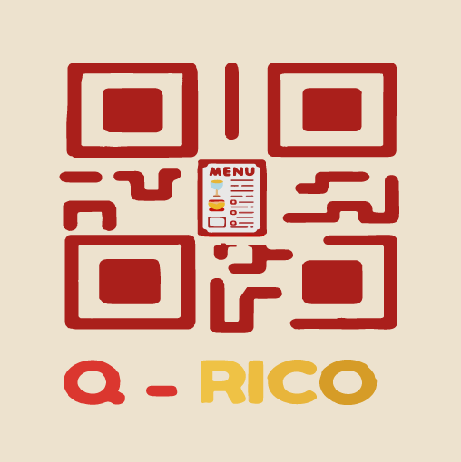

<aside class="sidebar">
    <!-- Logo del Restaurante -->
    <div class="logo-contenedor">
        
    </div>

    <!-- Navegación de Categorías con Íconos -->
    <nav class="categorias-nav">
        <h2>Categorías</h2>
        <ul>
            <li><a href="#todos"><i class="fa-solid fa-table-cells"></i> Todos</a></li>
            <li><a href="#entradas"><i class="fa-solid fa-carrot"></i> Entradas</a></li>
            <li><a href="#platos-fuertes"><i class="fa-solid fa-burger"></i> Platos Fuertes</a></li>
            <li><a href="#bebidas"><i class="fa-solid fa-martini-glass"></i> Bebidas</a></li>
            <li><a href="#postres"><i class="fa-solid fa-ice-cream"></i> Postres</a></li>
        </ul>
    </nav>

    <!-- Redes Sociales con Íconos -->
    <div class="redes-sociales">
        <a href="#whatsapp"><i class="fa-brands fa-whatsapp"></i> WhatsApp</a>
        <a href="#instagram"><i class="fa-brands fa-instagram"></i> Instagram</a>
    </div>
</aside>